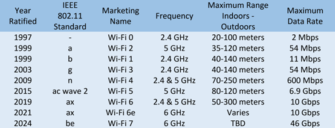

Alphabet Soup: Wi-Fi Standards
As an IT Support specialist, you may be responsible for supporting wireless technologies. In this reading, you will learn about the 802.11 Wireless-Fidelity (Wi-Fi) standards, including the alphabet-coded updates: a, b, g, n, ac, ad, af, ah, ax, ay, and az. You will also learn about the differences between the 2.4 gigahertz (GHz) and 5 GHz Wi-Fi frequencies.
You may already be familiar with selecting from the 2.4 GHz and 5 GHz frequency options on your home Wi-Fi router. Perhaps you also noticed the 802.11 specifications on the packaging for your Wi-Fi router when you purchased it. Have you wondered what these numbers and letters mean?
Wi-Fi 2.4 GHz and 5 GHz frequencies
There are multiple wireless technologies available today that use various frequencies ranging from radio to microwave bands. These wireless technologies include Wi-Fi, Z-Wave, ZigBee, Thread, Bluetooth, and Near Field Communication (NFC). Radio and microwave frequency bands each have specific ranges that are divided into channels. Wi-Fi uses the 2.4 GHz and 5 GHz microwave radio frequency band ranges for sending and receiving data. Some Wi-Fi routers use multiple channels within each range to avoid signal interference and to load-balance network traffic. Wi-Fi is commonly used for wireless local area networks (WLANs).
The following is a comparison of the performance characteristics between the 2.4 GHz and 5 GHz frequency bands:
2.4 GHz
• Advantages:
o Has the longest signal range from 150 feet (45 meters) indoors to 300 feet (92 meters) outdoors.
o Can pass through walls and other solid objects.
• Disadvantages:
o The long signal range also increases the chances of Wi-Fi traffic being intercepted by cybercriminals.
o Includes a limited number of channels. Can range from 11 to 14 channels, depending on regulations in the country of use.
o Can experience network traffic congestion and interference with other Wi-Fi networks and wireless technologies, such as BlueTooth, that overlap the 2.4 GHz frequency bands.
o Microwave ovens also work in the 2.4 GHz frequency band and can cause Wi-Fi interference.
o Under specific conditions, the maximum achievable data rate is 600 Mbps.
5 GHz
• Advantages:
o Includes significantly more channels than 2.4 GHz.
o Experiences fewer interference problems and less wireless network traffic congestion than 2.4 GHz.
o Can achieve over 2 Gbps data transfer speeds under specific conditions.
• Disadvantages:
o The wireless range is limited to 50 feet (12 meters) indoors and 100 feet (30 meters) outdoors.
o Does not penetrate walls and other solid objects as well as 2.4 GHz.
IEEE 802.11 standards
In 1997, the Institute of Electrical and Electronics Engineers (IEEE) ratified the first 802.11 standard for wireless fidelity (later branded as Wi-Fi). The standard was first published for use by computer device manufacturers to use as a common protocol for wireless communications. The IEEE has amended the 802.11 specifications multiple times over the years with updates and additional enhancements to 802.11 Wi-Fi. The IEEE names each new amendment with one or two letters appended to 802.11 (e.g., 802.11n or 802.11ax). The IEEE plans to continue updating the 802.11 specifications until a new technology replaces Wi-Fi.
The majority of wireless networks use the IEEE 802.11 standards for Wi-Fi. Wi-Fi networks include client devices (e.g., laptops, tablets, smartphones, IoT devices, etc.) that are configured to connect to wireless access points. This configuration is referred to as “infrastructure mode”. Access points can serve both wireless and wired network traffic. For wired traffic, the access point works as a bridge between wireless devices and a wired network. The access point connects to an Ethernet switch through a wired Ethernet cable.
The various amended 802.11 specifications use the same fundamental data link protocol. However, some characteristics may vary at the OSI physical layer, including:
• signal ranges
• modulation techniques
• transmission bit rates
• frequency bands
• channels
Note that countries around the world may impose different regulations on channel usage, power limitations, and Wi-Fi ranges. A technology called dynamic frequency selection (DFS) is also required to prevent 5 GHz Wi-Fi signals from interfering with local radar and satellite communications.
A comparison of the frequencies, maximum data rates, and maximum signal ranges for each 802.11 update over the years is detailed below:

IEEE 802.11 major updates list:
• 802.11a (1999) - Wi-Fi 2
o Designed for 5 GHz frequency band only
o Offered a maximum data rate of 54 Mbps
o Offered a maximum signal range of 400 feet (120 m)
o Defined 23 non-overlapping channels at 20 MHz wide
• 802.11b (1999) - Wi-Fi 1
o Designed for 2.4 GHz frequency band only
o Offered a maximum data rate of 11 Mbps
o Offered a maximum signal range of 450 feet (140 m)
o Defined 14 overlapping channels (frequent cause of interference)
• 802.11g (2003) update to 802.11b - Wi-Fi 3
o Improved 2.4 GHz frequency band only
o Increased the maximum data rate to 54 Mbps
• 802.11n (2009) bandwidth increase - Wi-Fi 4
o Improved both 2.4 GHz and 5 GHz frequency bands
o Access points could offer “dual-band” support with each band implemented by a separate radio.
o Increased bandwidth and reliability with “multiple input multiple output" (MIMO) technology.
o Allowed “channel bonding” for 5 GHz (two adjacent channels could be combined).
o Increased the maximum data rate to 72 Mbps per stream and 150 Mbps per stream for bonded channels. With specific configurations, the maximum data rate could be as high as 600 Mbps.
o Increased maximum signal range of 825 feet (250 m)
• 802.11ac (2014) and Wave 2 (2015) bandwidth increases - Wi-Fi 5
o Improved the 5 GHz frequency band only, though access points could still offer dual band support for older 2.4 GHz specifications.
o Access points could offer triband support (one 2.4 GHz and two 5 GHz radios).
o Supported wider bonded channels at 80 and 160 MHz.
o Allowed up to eight streams with each 80 MHz channel.
o Increased maximum data rates to 1 Gbps and could be as high as 2.2 Gbps for specific configurations. Wave 2 increased the maximum data rate to 6.9 Gbps.
o Increased sent data transmissions to up to 4 clients at the same time. This was achieved by allowing access points to use multiple antennas through downlink multiuser MIMO (DL MU-MIMO) technology.
• 802.11ax (2019) bandwidth increases - Wi-Fi 6
o Improved data stream rates to 600 Mbps per 80 MHz channel, with combined data rates of over 1 Gbps for the 2.4 GHz frequency and 4.8 Gbps for the 5 GHz frequency.
o Increased sent data transmissions to up to 8 clients at the same time with downlink MU-MIMO.
o Added support for full-duplex MU-MIMO to receive uplink data from multiple client devices.
o Added support for “orthogonal frequency division multiple access” (OFDMA), which works with MU-MIMO to sustain high data rates during periods of high client device traffic.
o Requires all client devices to use WPA3 security protocols.
• Wi-Fi 6e (2020) bandwidth increases
o Added support for a new 6 GHz frequency band, which has a combined maximum data rate speed of 10 Gbps (shared by multiple devices).
o Added new channels to reduce interference.
o Improved frequency space for 80 and 160 MHz channels.